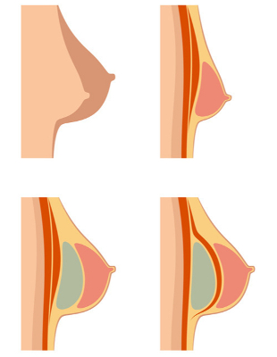

Aumento de Senos
Mastoplastia de AumentoEl aumento de senos es uno de los procedimientos estéticos más frecuentes y que generan mayor satisfacción a los pacientes ya que puede lograr resultados espectaculares que son evidentes inmediatamente luego de la cirugía.
Cabe destacarse desde ya que la colocación de prótesis mamarias no altera posteriormente la lactancia ni el monitoreo diagnóstico mediante mamografías o ecografías mamarias.
Motivos que indican o motivan la cirugía de aumento mamario
El principal motivo de esta cirugía está dada en pacientes con senos pequeños, senos de tamaño desigual o en senos que han disminuido y que presentan descenso y flaccidez por ejemplo luego de la lactancia.
Durante la consulta, analizamos de forma personalizada los deseos de la paciente, las expectativas, la forma, dimensiones y proporciones de su cuerpo y fundamentalmente las características de las mamas. En base a este análisis, nuestro consejo se basará en el mejor implante y la mejor técnica para lograr el mejor resultado posible, buscando que las mamas resulten naturales, proporcionadas a su cuerpo, armónicas y elegantes.
En los casos que la paciente presente además los senos descendidos (ptosis mamaria), se puede asociar el levantamiento de los senos a la colocación de implantes, para obtener resultados más satisfactorios.
Técnicas de aumento mamario
Las técnicas de aumento mamario básicamente son dos.
El aumento mediante implantes protésicos que es la más ampliamente utilizada.
El aumento mamario mediante el relleno con inyecciones de grasa propia del paciente. Esta ultima técnica, aunque atractiva, resulta algo impredecible dado que algo de tejido graso inyectado se reabsorbe y lo que logra implantarse correctamente, posteriormente puede estar sujeto a las variaciones de peso de la persona, por lo que no se obtienen resultados completamente predecibles como se logran con las prótesis. En general se aplica solo para pequeños defectos.
Existen diferentes composiciones de implantes mamarios, como los de poliuretano, salinos o de silicona. Los que se utilizan más frecuentes en nuestro país son los de gel cohesivo de silicona, los cuales son totalmente seguros y tienen una consistencia natural al tacto. Este gel cohesivo no permite que el contenido se disperse si se llega a romper la prótesis. Los implantes de silicona también tienen diferentes variedades: lisos o texturizados, redondo o anatómico, de perfil bajo, medio o alto y obviamente de diferentes volúmenes. Las prótesis además se pueden colocar por delante o detrás del musculo pectoral.

Nosotros preferimos utilizar implantes redondos, ya que estos no tienen problemas de rotación como tienen los anatómicos.
Preferimos colocar implantes lisos, detrás del musculo pectoral, ya que los lisos tienen menos incidencia de formación de seroma temprano y tardío y otras complicaciones.
La posición retro-pectoral logra un resultado más natural y con menor incidencia de encapsulamiento.
Las incisiones o abordajes también pueden ser variados; periareolar, submamario o axilar, buscando lugares poco visibles y cicatrices ocultas. En la consulta valoraremos cual es la mejor opción personalizada a las necesidades y preferencias.
Características del procedimiento
Esta cirugía la realizamos preferentemente bajo anestesia general para mayor confort del paciente. Esto lo complementamos con una anestesia local luego de dormido el paciente para que tenga menor dolor postoperatorio. Este procedimiento lo realizamos en un block quirúrgico, en el contexto de un centro con todos los elementos de bioseguridad. Nosotros realizamos suturas reabsorbibles intradérmicas, por lo que no es necesario retirar puntos en el postoperatorio.
Postoperatorio y recuperación
En el postoperatorio es normal la inflamación moderada de los senos y algo de dolor los primeros 2 a 3 días que calma habitualmente con analgésicos comunes.
Se recomienda el uso de sostenes deportivos suaves, cómodos y ligeramente ajustados durante las primeras 4 semanas. Pueden aparecer algunos moretones que también desaparecen entre la 3era. y 4ta. semana.
La reincorporación a las tareas habituales depende del grado de exigencia que se tenga. El ejercicio leve puede retomarse lentamente luego del mes y el deporte intenso recién se recomienda luego de los 2 meses.
Aumento mamario o mastoplastia de aumento
Aumento mamario mediante la colocación de prótesis o implantes.
Ver Video